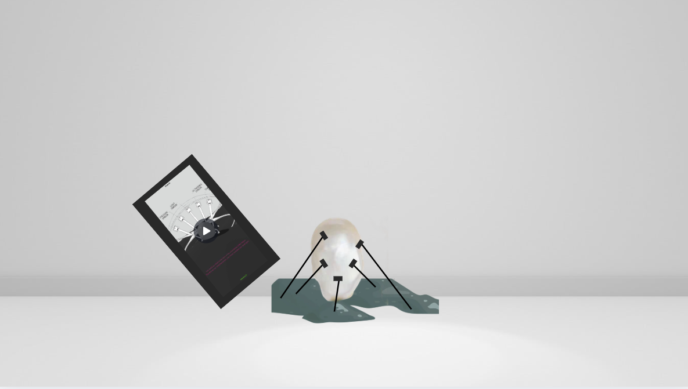
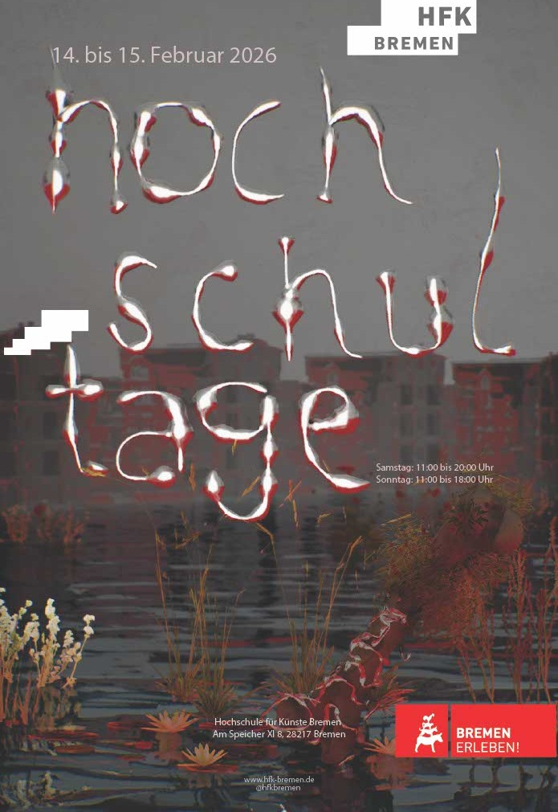

Eligible began as a personal anxiety — an unease about the uncertainties that shape daily life — and expanded into something larger: a question about the futures we are already inside.
Dystopia has been a preoccupation since adolescence; I once wrote a dystopian novel. But this project approaches the subject from a different angle entirely.
What kind of future awaits us under the governance of artificial intelligence? Can we extend full trust to systems we did not choose? Can we hand the responsibility of our futures to algorithmic control?
Can AI decide who survives —The word "eligible" appears neutral — bureaucratic, even mundane. Eligibility forms. Eligibility criteria. Eligible candidates. But beneath its administrative surface, the word performs a profound act: it divides the population.
Those who are eligible are visible, valuable, selectable. Those who are not are rendered surplus, invisible, unprocessable. This is not metaphor — it is the operating logic of modern governance, insurance systems, data markets, and algorithmic decision-making.
Real-world counterparts:
Attended a class with Ralf Beacker and began thinking seriously about AI and its effects on daily life. The starting point was not academic — it was personal unease.
The initial concept was called Pearls Forming — a mechanism that creates pearls from data gathered from the outside world. A pearl looks dense and autonomous, yet it is entirely shaped by external pressure.
The oyster's environment is a stress factor; the pearl is its response. We are the same: continuously shaped by inputs we perceive from outside. As the pressure increases, the pearl grows smaller and denser.

After reflection on what I actually wanted to say, the project shifted. The real subject was fear — specifically the fear of the future and AI's growing encroachment on life.
Dystopia became the framework for the project—a genre I have been drawn to since high school and one in which I have written fiction. During this period, I also produced a poster about unknown futures, which further crystallised the direction of my work. Later, I created a poster design for the Hochschultage competition related to the topic. The project also reflects on this transitional period and what art students are doing during it.
How does pressure from the outside shape us — and who gets to decide?

Began developing methods for making the control logic of AI visible. Built a workflow in ComfyUI that decides the futures of newborns based solely on their appearance — a direct materialisation of algorithmic judgment.
The system classifies. It selects. It eliminates. The question became the title.
Started producing a 3D AI film that visualises the dystopia. The film renders environments and scenarios that could not be filmed conventionally — institutional spaces, classification rituals, futures that don't exist yet but feel inevitable.
The cinematographic language draws on Vast Land: wide, slow, oppressive. A world that has already accepted what we are still pretending is a future problem.
The first draft of the project will be presented as a film. An exhibition format. This website serves as the conceptual companion to that work.